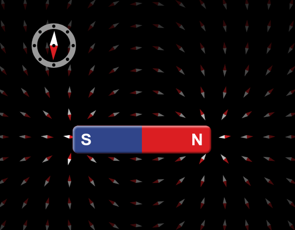
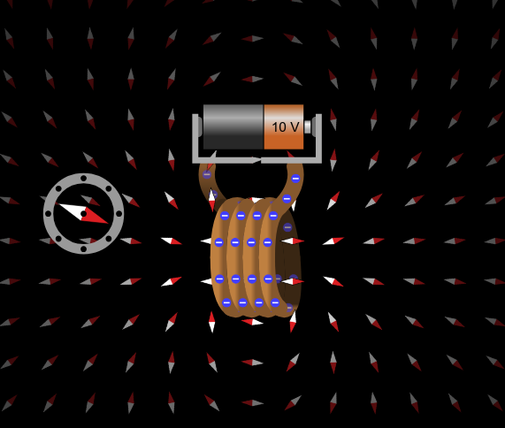
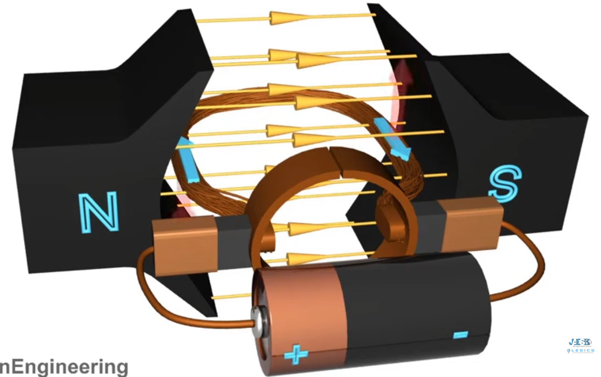

Exercícios: Eletromagnetismo (V ou F)
Table of Contents
- Instruções
- Questões
- Questão 1 — Forças fundamentais
- Questão 2 — Atração e repulsão entre polos
- Questão 3 — Monopolo magnético
- Questão 4 — Campo magnético e unidade
- Questão 5 — Linhas de campo magnético
- Questão 6 — Bússola e campo magnético da Terra
- Questão 7 — Experimento de Oersted
- Questão 8 — Bobina, solenoide e eletroímã
- Questão 9 — Campo da bobina e número de voltas
- Questão 10 — Força magnética sobre um condutor
- Questão 11 — Motor elétrico: energia e torque
- Questão 12 — Motores de corrente contínua e alternada
- Questão 13 — Fluxo magnético e indução
- Questão 14 — Lei de Faraday
- Questão 15 — Lei de Lenz
- Questão 16 — Gerador elétrico
- Questão 17 — Materiais magnéticos
- Questão 18 — Ímãs permanentes e eletroímãs
- Questão 19 — Transformadores: relação de espiras
- Questão 20 — Transformadores: tensão e potência
- Questão 21 — Lei de Faraday e indução eletromagnética
- Questão 22 — Gerador elétrico
Instruções
Esta lista reúne questões de verdadeiro ou falso sobre o bloco de eletromagnetismo estudado em Física III: ímãs e campo magnético, magnetismo e corrente elétrica, motores, indução eletromagnética, geradores, materiais magnéticos e transformadores.
Em cada questão, classifique as cinco afirmações como verdadeiras (V) ou falsas (F) e assinale a alternativa que apresenta a sequência correta.
Questões
Questão 1 — Forças fundamentais
Sobre a comparação entre as forças gravitacional, eletrostática e magnética, julgue as afirmações a seguir.
( ) As três forças diminuem quando a distância entre os corpos aumenta.
( ) Se a distância entre dois corpos dobra, a força fica quatro vezes menor.
( ) A força magnética depende apenas da distância, e não da magnetização dos ímãs.
( ) A força gravitacional é proporcional ao produto das massas.
( ) A força elétrica é inversamente proporcional à distância, e não ao seu quadrado.
a) V - F - F - V - F b) V - V - V - V - F c) V - V - F - V - F d) F - V - F - V - F e) V - V - F - F - VQuestão 2 — Atração e repulsão entre polos
Sobre a interação entre ímãs, julgue as afirmações.
( ) Polos de mesmo nome se repelem e polos de nomes diferentes se atraem.
( ) Dois polos norte sempre se atraem.
( ) A força entre dois ímãs pode ser de atração ou de repulsão, dependendo da orientação dos polos.
( ) Se aproximarmos o polo sul de um ímã do polo sul de outro, haverá atração.
( ) Ímãs exercem força sobre outros ímãs mesmo sem contato direto.
a) F - F - V - F - V b) V - F - V - F - V c) V - V - F - V - F d) V - F - V - V - F e) V - F - F - F - VQuestão 3 — Monopolo magnético
Sobre a existência de polos magnéticos isolados, julgue as afirmações.
( ) É possível isolar um polo norte magnético, separando-o do polo sul.
( ) Ao quebrar um ímã ao meio, obtemos dois ímãs, cada um com polo norte e polo sul.
( ) Existem monopolos magnéticos na natureza, assim como existem cargas elétricas isoladas.
( ) Não existe monopolo magnético.
( ) As linhas de campo magnético são sempre fechadas, pois não há monopolo.
a) V - F - F - V - V b) F - F - F - V - V c) F - V - V - V - F d) F - V - F - F - V e) F - V - F - V - VQuestão 4 — Campo magnético e unidade
Sobre o conceito de campo magnético, julgue as afirmações.
( ) O campo magnético está ao redor de um ímã ou de uma corrente, onde pode se manifesta a força magnética sobre uma carga magnética colocada ali (uma búlsola, ou pequeno ímã, por exemplo).
( ) A unidade de campo magnético no SI é o volt (V).
( ) A unidade de campo magnético no SI é o tesla (T).
( ) O campo magnético só existe dentro do ímã; fora dele não há campo.
( ) O campo magnético é uma grandeza vetorial, com módulo, direção e sentido.
a) V - V - F - F - V b) F - F - V - F - V c) V - F - F - F - V d) V - F - V - F - V e) V - F - V - V - FQuestão 5 — Linhas de campo magnético
Sobre as linhas de campo magnético, julgue as afirmações.
( ) Por fora do ímã, as linhas de campo saem do polo norte e entram no polo sul.
( ) As linhas de campo magnético podem se cruzar em um mesmo ponto.
( ) Regiões onde as linhas de campo estão mais próximas indicam campo magnético mais intenso.
( ) As linhas de campo magnético formam sempre linhas fechadas.
( ) As linhas de campo magnético começam e terminam em um único polo, como acontece com as cargas elétricas.
a) V - F - F - V - F b) V - F - V - F - F c) V - V - V - V - F d) V - F - V - V - V e) V - F - V - V - FQuestão 6 — Bússola e campo magnético da Terra
As figuras mostram uma bússola próxima a um ímã permanente e uma bússola orientada pelo campo magnético da Terra. Com base nelas, julgue as afirmações.
Bússola próxima a um ímã permanente.

Fonte: criado pelo autor a partir da simulação Ímã e Bússola - PhET.
Bússola orientada pelo campo magnético da Terra.

Fonte: criado pelo autor a partir da simulação Ímã e Bússola - PhET.
( ) A agulha da bússola se orienta na direção do campo magnético do local.
( ) O campo magnético da Terra orienta a agulha da bússola.
( ) O polo norte geográfico da Terra coincide exatamente com o polo norte magnético.
( ) Na primeira figura, a bússola sofre desvio por causa do campo do ímã.
( ) A bússola indica a direção do campo elétrico da Terra.
a) V - V - F - V - F b) V - F - V - V - F c) V - V - V - F - F d) F - V - F - V - F e) V - V - F - F - VQuestão 7 — Experimento de Oersted
A figura mostra a corrente elétrica de um circuito gerando campo magnético. Sobre o experimento de Oersted, julgue as afirmações.
Corrente elétrica gerando campo magnético.

Fonte: criado pelo autor a partir da simulação Ímãs e Eletroímãs - PhET.
( ) Oersted observou que uma bússola é desviada por um fio percorrido por corrente elétrica.
( ) Cargas elétricas em movimento geram campo magnético.
( ) Uma corrente elétrica produz apenas campo elétrico, e nunca campo magnético.
( ) O experimento de Oersted não teve relação com o magnetismo.
( ) O campo magnético ao redor de um fio depende da corrente que o percorre.
a) V - V - F - F - F b) V - F - V - F - F c) V - V - F - V - F d) F - V - F - F - V e) V - V - V - F - FQuestão 8 — Bobina, solenoide e eletroímã
A figura mostra uma bobina ligada a uma pilha e o campo magnético produzido. Sobre bobinas e eletroímãs, julgue as afirmações.
Bobina ligada a uma pilha e seu campo magnético.

Fonte: criado pelo autor a partir da simulação Ímãs e Eletroímãs - PhET.
( ) Uma bobina percorrida por corrente se comporta como um ímã em barra.
( ) O campo magnético de um eletroímã existe enquanto há corrente elétrica.
( ) Ao desligar a corrente, o eletroímã continua produzindo campo magnético permanente.
( ) Um eletroímã pode ter núcleo de ferro para intensificar o campo.
( ) O campo magnético no interior de um solenoide depende da corrente que o percorre.
a) V - F - V - V - F b) V - V - V - F - F c) V - V - F - V - V d) V - V - F - V - F e) F - V - F - V - VQuestão 9 — Campo da bobina e número de voltas
As figuras mostram a medição do campo no interior de uma bobina com 2 voltas e com 4 voltas, mantendo a mesma pilha e a mesma corrente. Sobre esse experimento, julgue as afirmações.
Campo magnético no interior de uma bobina com 2 voltas.

Fonte: criado pelo autor a partir da simulação Ímãs e Eletroímãs - PhET.
Campo magnético no interior de uma bobina com 4 voltas.

Fonte: criado pelo autor a partir da simulação Ímãs e Eletroímãs - PhET.
( ) Mantendo a mesma corrente, aumentar o número de voltas aumenta o campo no interior da bobina.
( ) Dobrando o número de voltas, com a mesma corrente, o campo magnético no interior dobra.
( ) O número de voltas da bobina não influencia o campo magnético no seu interior.
( ) Aumentar a corrente elétrica na bobina aumenta o campo magnético produzido.
( ) O campo no interior da bobina depende apenas do material do núcleo, e não da corrente.
a) V - V - F - V - V b) V - V - V - F - F c) V - V - F - V - F d) V - F - V - V - F e) F - V - F - V - FQuestão 10 — Força magnética sobre um condutor
Sobre a força magnética que atua em um condutor percorrido por corrente, julgue as afirmações.
( ) Um condutor percorrido por corrente, imerso em um campo magnético, pode sofrer força.
( ) A força magnética sobre o condutor depende da corrente e do campo magnético.
( ) A força magnética sobre um fio com corrente é sempre nula dentro de um ímã.
( ) A força magnética é a base do funcionamento dos motores elétricos.
( ) A direção da força magnética é perpendicular tanto ao campo quanto à corrente.
a) V - V - F - V - V b) V - V - V - F - V c) V - F - V - V - V d) F - V - F - V - V e) V - V - F - F - VQuestão 11 — Motor elétrico: energia e torque
A figura ilustra um motor de corrente contínua. Sobre o motor elétrico, julgue as afirmações.
Motor de corrente contínua (CC).

Fonte: Motor CC, Como funciona? - Canal JAES Company Português.
( ) O motor elétrico converte energia elétrica em energia mecânica.
( ) A força magnética sobre a espira produz um torque que a faz girar.
( ) O motor elétrico converte energia mecânica em energia elétrica.
( ) A corrente elétrica na espira não interfere no funcionamento do motor.
( ) O motor elétrico funciona sem a presença de campo magnético.
a) V - V - F - F - F b) V - F - V - F - F c) V - V - F - V - F d) F - V - F - F - V e) V - V - V - F - FQuestão 12 — Motores de corrente contínua e alternada
As figuras mostram esquemas de um motor de corrente contínua (CC) e de um motor de corrente alternada (CA). Sobre esses motores, julgue as afirmações.
Motor de corrente contínua (CC).
Fonte: Motor CC, Como funciona? - Canal JAES Company Português.
( ) Motores de corrente contínua (CC) são alimentados por tensão contínua, como pilhas e baterias.
( ) Motores de corrente alternada (CA) são alimentados pela rede elétrica.
( ) Motores CA e CC são idênticos e funcionam apenas com corrente contínua.
( ) Tanto motores CC quanto CA baseiam-se na força magnética sobre condutores com corrente.
( ) O motor CC não utiliza ímãs nem campo magnético.
a) V - F - V - V - F b) V - V - V - V - F c) V - V - F - V - F d) F - V - F - V - F e) V - V - F - F - VQuestão 13 — Fluxo magnético e indução
Sobre o fluxo magnético e a indução eletromagnética, julgue as afirmações.
( ) A variação do fluxo magnético através de um circuito pode gerar corrente elétrica.
( ) A esse fenômeno damos o nome de indução eletromagnética.
( ) Um campo magnético constante, sem variação, sempre gera corrente induzida.
( ) O fluxo magnético depende do campo e da área atravessada.
( ) A indução eletromagnética foi descoberta por Michael Faraday.
a) V - V - F - V - V b) V - V - F - V - F c) V - F - V - V - V d) V - V - V - F - V e) F - V - F - V - VQuestão 14 — Lei de Faraday
Sobre a lei de Faraday, julgue as afirmações.
( ) A força eletromotriz induzida é proporcional à taxa de variação do fluxo magnético.
( ) Quanto mais rápido varia o fluxo magnético, maior a força eletromotriz induzida.
( ) A lei de Faraday afirma que a corrente induzida independe da variação do fluxo.
( ) A lei de Faraday está associada à indução eletromagnética.
( ) A lei de Faraday só se aplica a ímãs permanentes, e não a bobinas.
a) V - F - V - V - F b) V - V - V - F - F c) V - V - F - F - V d) V - V - F - V - V e) V - V - F - V - FQuestão 15 — Lei de Lenz
Sobre a lei de Lenz, julgue as afirmações.
( ) A corrente induzida se opõe à variação do fluxo magnético que a originou.
( ) A lei de Lenz explica o sentido da corrente induzida.
( ) A corrente induzida tende a reforçar sempre a variação do fluxo.
( ) O sinal negativo na lei de Faraday está relacionado à lei de Lenz.
( ) A lei de Lenz contradiz a lei de Faraday.
a) V - V - F - V - F b) V - F - V - V - F c) V - V - V - F - F d) F - V - F - V - F e) V - V - F - F - VQuestão 16 — Gerador elétrico
Sobre o gerador elétrico, julgue as afirmações.
( ) O gerador elétrico converte energia mecânica em energia elétrica.
( ) O funcionamento do gerador baseia-se na indução eletromagnética.
( ) O gerador e o motor têm a mesma função: ambos convertem energia elétrica em mecânica.
( ) Ao girar uma bobina em um campo magnético, surge força eletromotriz induzida.
( ) O gerador não precisa de movimento nem de campo magnético para funcionar.
a) V - F - V - V - F b) V - V - F - V - F c) V - V - V - F - F d) F - V - F - V - F e) V - V - F - F - VQuestão 17 — Materiais magnéticos
Sobre o comportamento dos materiais na presença de um campo magnético, julgue as afirmações.
( ) Materiais ferromagnéticos são fortemente atraídos por ímãs.
( ) Ferro, níquel e cobalto são exemplos de materiais ferromagnéticos.
( ) Materiais diamagnéticos são fortemente atraídos por ímãs.
( ) Materiais paramagnéticos são fracamente atraídos por ímãs.
( ) Todos os materiais se comportam da mesma forma na presença de um ímã.
a) V - F - V - V - F b) V - V - V - V - F c) V - V - F - V - F d) F - V - F - V - F e) V - V - F - F - VQuestão 18 — Ímãs permanentes e eletroímãs
Sobre ímãs permanentes e eletroímãs, julgue as afirmações.
( ) O neodímio-ferro-boro (NdFeB) é usado em ímãs permanentes.
( ) Um eletroímã é um ímã temporário produzido pela corrente em uma bobina.
( ) Um eletroímã mantém seu magnetismo permanente mesmo sem corrente.
( ) O núcleo de ferro pode intensificar o campo de um eletroímã.
( ) Todos os eletroímãs são ímãs permanentes.
a) V - F - V - V - F b) V - V - V - F - F c) V - V - F - F - V d) V - V - F - V - F e) F - V - F - V - FQuestão 19 — Transformadores: relação de espiras
Sobre a relação entre tensão e número de espiras em um transformador, julgue as afirmações.
( ) O transformador é formado por duas bobinas enroladas em um núcleo comum.
( ) A razão entre as tensões é igual à razão entre o número de espiras.
( ) A tensão na secundária independe do número de espiras da secundária.
( ) Se a secundária tem mais espiras que a primária, a tensão é elevada.
( ) O transformador funciona apenas com corrente contínua constante.
a) V - F - V - V - F b) V - V - V - F - F c) V - V - F - F - V d) V - V - F - V - V e) V - V - F - V - FQuestão 20 — Transformadores: tensão e potência
Sobre a elevação e a redução de tensão em transformadores, julgue as afirmações.
( ) Um transformador elevador aumenta a tensão.
( ) Um transformador redutor diminui a tensão.
( ) Um transformador ideal aumenta a potência fornecida.
( ) Em um transformador ideal, a potência de entrada é igual à de saída, desprezando perdas.
( ) O transformador altera a frequência da corrente alternada.
a) V - V - F - V - F b) V - F - V - V - F c) V - V - V - F - F d) F - V - F - V - F e) V - V - F - F - VQuestão 21 — Lei de Faraday e indução eletromagnética
As figuras mostram o giro de um ímã próximo a uma bobina ligada a um voltímetro, em dois momentos distintos. Com base nelas, julgue as afirmações.
Giro do ímã gerando tensão elétrica positiva (do ponto de vista do voltímetro acoplado).

Fonte: criado pelo autor a partir da simulação Laboratório Eletromagnético de Faraday - PhET.
Giro do ímã gerando tensão elétrica negativa (do ponto de vista do voltímetro acoplado).

Fonte: criado pelo autor a partir da simulação Laboratório Eletromagnético de Faraday - PhET.
( ) A rotação do ímã provoca variação do fluxo magnético que atravessa a bobina.
( ) A variação do fluxo magnético induz uma tensão elétrica na bobina, medida pelo voltímetro.
( ) A tensão induzida independe do movimento do ímã; basta que ele esteja próximo à bobina.
( ) A força eletromotriz induzida é proporcional à taxa de variação do fluxo magnético.
( ) Como o ímã está sempre girando, a tensão induzida tem sempre o mesmo sinal.
a) V - F - V - V - F b) V - V - V - F - F c) V - V - F - V - F d) F - V - F - V - F e) V - V - F - F - VQuestão 22 — Gerador elétrico
Considere as mesmas figuras da questão anterior, que mostram um dispositivo no qual o giro de um ímã gera tensão elétrica em uma bobina. Julgue as afirmações.
Giro do ímã gerando tensão elétrica positiva (do ponto de vista do voltímetro acoplado).
Fonte: criado pelo autor a partir da simulação Laboratório Eletromagnético de Faraday - PhET.
Giro do ímã gerando tensão elétrica negativa (do ponto de vista do voltímetro acoplado).
Fonte: criado pelo autor a partir da simulação Laboratório Eletromagnético de Faraday - PhET.
( ) A energia mecânica da rotação do ímã é convertida em energia elétrica.
( ) Como a tensão se alterna, ora positiva, ora negativa, o dispositivo ilustra um gerador de corrente alternada.
( ) O dispositivo mostrado funciona como motor, convertendo energia elétrica em movimento.
( ) O gerador baseia-se na indução eletromagnética (Lei de Faraday).
( ) Para gerar tensão, basta manter o ímã parado e próximo à bobina.
a) V - V - F - V - F b) V - F - V - V - F c) V - V - V - F - F d) F - V - F - V - F e) V - V - F - F - V